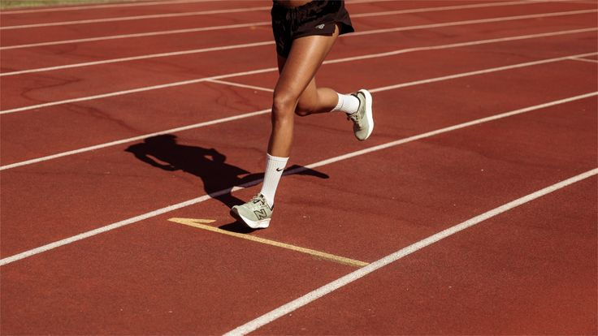

// project
Website Komunitas Lari Kolese Kanisius

CaniGesit Runners adalah website resmi untuk komunitas lari CaniGesit Runners di Kolese Kanisius. Website ini berfungsi sebagai pusat komunitas yang memudahkan anggota baru untuk mendaftar secara online, memantau jadwal event lari melalui kalender interaktif, melihat running leaderboard untuk memotivasi kompetisi yang sehat, serta mengabadikan momen kebersamaan komunitas melalui photo album digital.